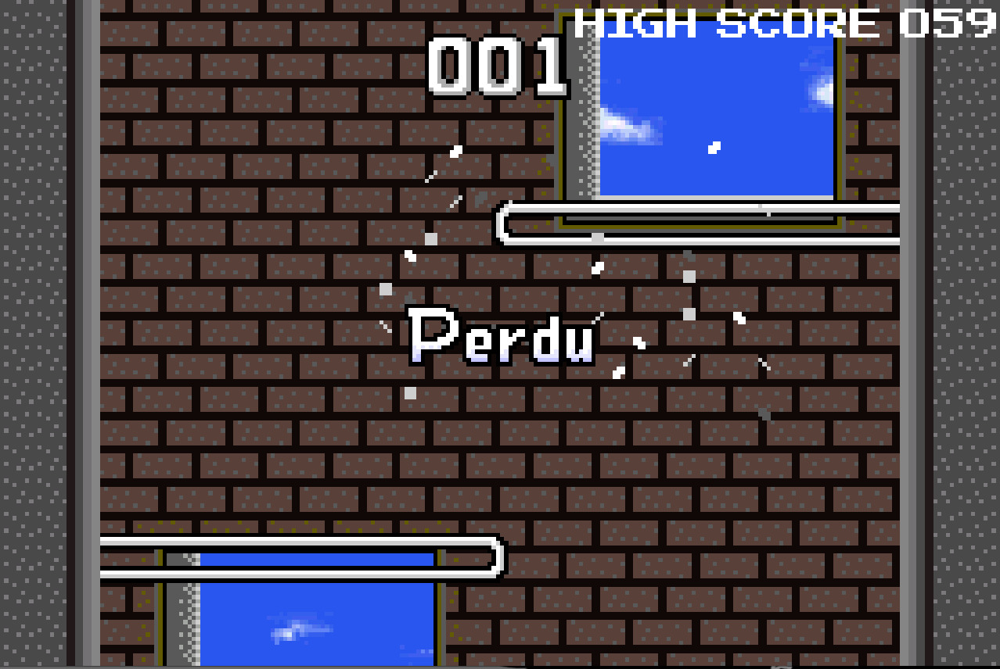
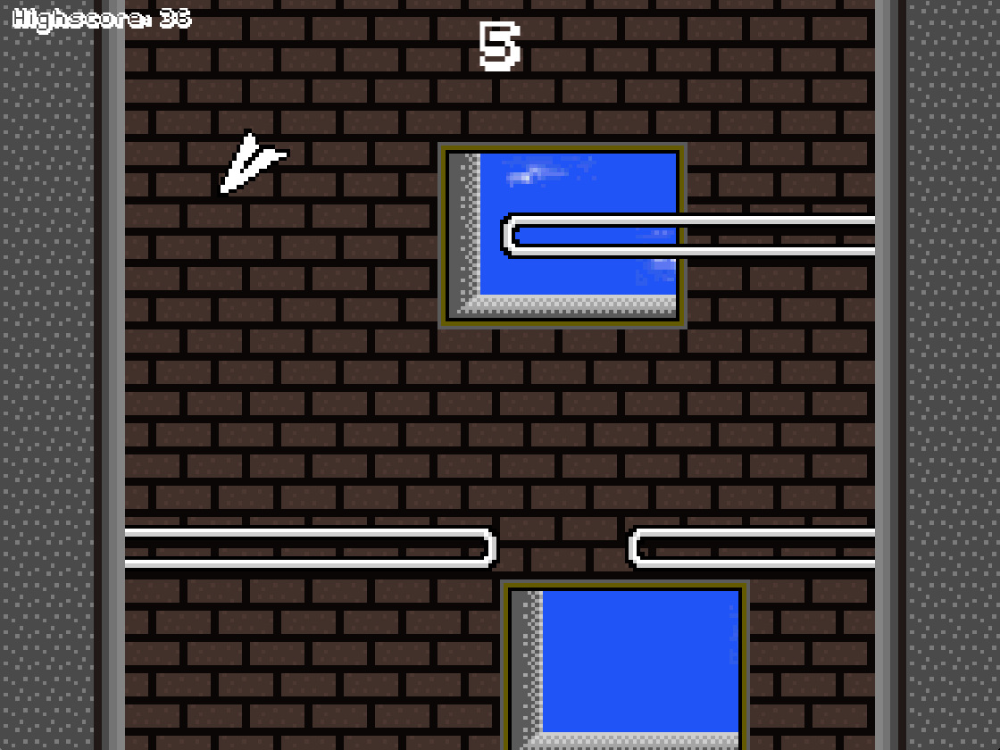

Paper Plane est un fork du mini-jeu “Papier Volant”, disponible à l'origine en mini-jeu complémentaire à “Wario Ware,Inc. MINIGAME MANIA” pour GameBoy™ Advance.

Capture d'écran du jeu original
Ce projet a été réalisé dans le cadre de la spécialité ISN par Guillaume JORANDON, élève en Terminale S au Lycée du Golfe de St TROPEZ. Il a été réalisé en 7 semaines en C++ avec le renfort de l'API graphique SFML. La version définitive comporte approximativement 2300 lignes de codes et est disponible sous licence CC By 4.0.

Le jeu final
Le jeu comporte néanmoins quelques différences par rapport au support original. En effet, ne disposant bien évidemment pas du code source du jeu d'origine, qui est fermé, j'ai dû reproduire les mécaniques de gameplay en me basant sur une observation empirique du jeu GBA. On peut notamment citer :
la maniabilité ;
le positionnement des fenêtres en arrière plan ;
la génération des obstacles ;
quelques textures ;
les polices de caractère.
Concernant le fonctionnement du jeu, il est très simple : vous êtes un avion en papier qui descend dans une tour sans fin, en évitant les obstacles. La moindre erreur, et c'est la mort !
Esc : mettre en pause pendant le jeu. ←→↑↓(dans les menus) : navigation. ←→(en jeu) : déplacer l'avion.
CARNET DE BORD
La création du jeu s'est déroulée sur 7 semaines, du cahier des charges au déboguage final.
SEMAINE 1
Création des codes sources de base des classes Tilemap, Tile, Tileset, BackgroundGenerator et Entity.
Implémentation des classes Tilemap, Tile et Tileset qui servent à afficher la tilemap (tableau bidimensionnel de tuiles) du jeu.
Implémentation de la classe Entity qui stocke des informations sur le joueur.
Début de l'implémentation de main.cpp. Le joueur peut se déplacer, le scrolling (défilement du niveau) fonctionne.
SEMAINE 2
Implémentation de la classe BackgroundGenerator qui décrit la génération de l'arrière plan du niveau (c'est à dire le positionnement aléatoire des fenêtres).
Création et implémentation de la classe PhysicGenerator, qui décrit la génération des obstacles que le joueur doit éviter.
Avec ces nouvelles classes, le main.cpp a pu être modifié afin que la génération fonctionne. Des musiques en jeu ont été ajoutées.
SEMAINES 3, 4, 5
Création du menu
Modification du main.cpp pour achever le fonctionnement de la boucle de jeu : collision, mort, système de score.
Première phase de réglage et de déboguage.
SEMAINE 6
Intégration avec la classe ParticleSystem d'une animation à la mort du joueur (un système de particules génère une slave de particules depuis la position du joueur au moment de sa mort). Le but de cette classe, en plus de permettre d'être le plus fidèle possible au jeu original, était de m'entrainer à la création d'un système de particules basique.
SEMAINE 7
Déboguage.
Mise en ligne du projet sur Github (quelque chose que j'aurais dû faire dès le début).
Codage du présent site et écriture du compte-rendu de projet.